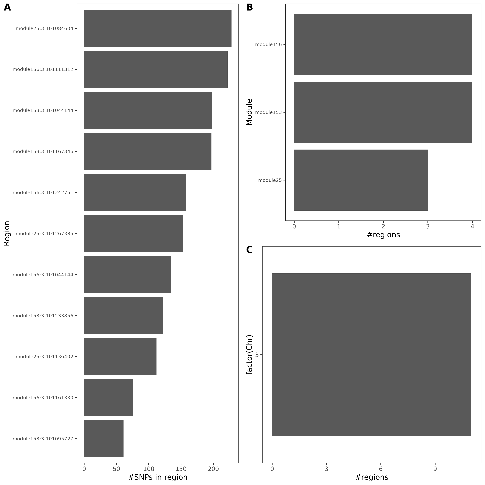
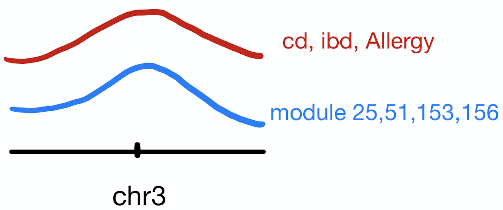

Log2021
Last updated: 2024-04-25
Checks: 7 0
Knit directory: GradLog/
This reproducible R Markdown analysis was created with workflowr (version 1.7.0). The Checks tab describes the reproducibility checks that were applied when the results were created. The Past versions tab lists the development history.
Great! Since the R Markdown file has been committed to the Git repository, you know the exact version of the code that produced these results.
Great job! The global environment was empty. Objects defined in the global environment can affect the analysis in your R Markdown file in unknown ways. For reproduciblity it’s best to always run the code in an empty environment.
The command set.seed(20201014) was run prior to running
the code in the R Markdown file. Setting a seed ensures that any results
that rely on randomness, e.g. subsampling or permutations, are
reproducible.
Great job! Recording the operating system, R version, and package versions is critical for reproducibility.
Nice! There were no cached chunks for this analysis, so you can be confident that you successfully produced the results during this run.
Great job! Using relative paths to the files within your workflowr project makes it easier to run your code on other machines.
Great! You are using Git for version control. Tracking code development and connecting the code version to the results is critical for reproducibility.
The results in this page were generated with repository version 37d45d6. See the Past versions tab to see a history of the changes made to the R Markdown and HTML files.
Note that you need to be careful to ensure that all relevant files for
the analysis have been committed to Git prior to generating the results
(you can use wflow_publish or
wflow_git_commit). workflowr only checks the R Markdown
file, but you know if there are other scripts or data files that it
depends on. Below is the status of the Git repository when the results
were generated:
Ignored files:
Ignored: .DS_Store
Ignored: .Rhistory
Ignored: .Rproj.user/
Ignored: analysis/.DS_Store
Ignored: analysis/.Rhistory
Untracked files:
Untracked: rstudio_server_config_midway3.Rmd
Unstaged changes:
Modified: analysis/Trans.Rmd
Deleted: analysis/rstudio_server_config_midway3.Rmd
Modified: analysis/week_log.Rmd
Note that any generated files, e.g. HTML, png, CSS, etc., are not included in this status report because it is ok for generated content to have uncommitted changes.
These are the previous versions of the repository in which changes were
made to the R Markdown (analysis/Log2021.Rmd) and HTML
(docs/Log2021.html) files. If you’ve configured a remote
Git repository (see ?wflow_git_remote), click on the
hyperlinks in the table below to view the files as they were in that
past version.
| File | Version | Author | Date | Message |
|---|---|---|---|---|
| html | ee58970 | liliw-w | 2024-04-25 | Build site. |
| html | c50b98f | liliw-w | 2024-04-25 | Build site. |
| html | dacdae7 | liliw-w | 2022-06-11 | Build site. |
| html | c82dd26 | llw | 2022-01-16 | Build site. |
| Rmd | 9e1307d | llw | 2022-01-16 | minor edits |
| html | da2f889 | llw | 2022-01-16 | Build site. |
| Rmd | f855bc7 | llw | 2022-01-16 | minor edits |
| html | e26f3bc | llw | 2022-01-16 | Build site. |
| Rmd | 5765087 | llw | 2022-01-16 | Add coloc analysis for trait MS |
| html | 97b4ca1 | llw | 2022-01-03 | Build site. |
| html | f6c2add | llw | 2021-12-22 | Build site. |
| Rmd | 74b31a9 | llw | 2021-12-22 | new week |
| html | 087078d | llw | 2021-12-12 | Build site. |
| Rmd | 562e3b2 | llw | 2021-12-12 | wrong figure name |
| html | b1ee5d2 | llw | 2021-12-12 | Build site. |
| Rmd | cdc581e | llw | 2021-12-12 | update progress |
| html | 5565fdd | liliw-w | 2021-11-24 | Build site. |
| Rmd | 94a7bb9 | liliw-w | 2021-11-24 | add notes |
| html | 91631c9 | liliw-w | 2021-11-15 | Build site. |
| Rmd | c50e156 | liliw-w | 2021-11-15 | update log |
| html | 82ed164 | liliw-w | 2021-09-07 | Build site. |
| Rmd | b776926 | liliw-w | 2021-09-07 | Add Sep 07 |
| html | 671dc18 | liliw-w | 2021-09-02 | Build site. |
| Rmd | 60d26b9 | liliw-w | 2021-09-02 | Minor edits |
| html | 88f3dab | liliw-w | 2021-09-02 | Build site. |
| Rmd | 8706282 | liliw-w | 2021-09-02 | Minor edits |
| html | 90ef72c | liliw-w | 2021-09-02 | Build site. |
| Rmd | 786b185 | liliw-w | 2021-09-02 | Keep cross mappable genes in the filtering step |
| html | 52d05f0 | liliw-w | 2021-08-17 | Build site. |
| Rmd | 1c75f6f | liliw-w | 2021-08-17 | wflow_publish("analysis/Log2021.Rmd") |
| html | 6dac5dc | liliw-w | 2021-07-08 | Build site. |
| Rmd | 6edd0eb | liliw-w | 2021-07-08 | Add July 06 |
| html | 0894fed | liliw-w | 2021-07-08 | Update figures location |
| Rmd | 9275134 | liliw-w | 2021-07-08 | Move figures for Log2021 to asset folder |
| html | 331721b | liliw-w | 2021-07-08 | Build site. |
| Rmd | 8bef12c | liliw-w | 2021-07-08 | Add July 08 |
| html | f6c37ba | liliw-w | 2021-06-29 | Build site. |
| Rmd | 1b79abb | liliw-w | 2021-06-29 | Add ‘estimate eQTLGen sigma by indepdent null eQTLGen zscores’ |
| html | 15631a8 | liliw-w | 2021-06-25 | Build site. |
| Rmd | bdc8aec | liliw-w | 2021-06-25 | minor edits |
| html | ea89d4f | liliw-w | 2021-06-25 | Build site. |
| Rmd | 0f60720 | liliw-w | 2021-06-25 | Replication of eQTLGen results in trans-PCO of eQTLGen summary stats |
| html | 25a87c0 | liliw-w | 2021-06-14 | Build site. |
| Rmd | 4fc3dff | liliw-w | 2021-06-14 | Add eQTLGen’s pvalues QQplot |
| html | 7ca8ec5 | liliw-w | 2021-06-11 | Build site. |
| Rmd | 170be38 | liliw-w | 2021-06-11 | revise ‘comparison with univariate’ |
| html | 8ab02f2 | liliw-w | 2021-06-10 | Build site. |
| Rmd | 52166c0 | liliw-w | 2021-06-10 | update Snakemake file with python lines |
| html | 04c44fc | liliw-w | 2021-05-26 | Build site. |
| Rmd | 1f02e91 | liliw-w | 2021-05-26 | edits |
| html | 096ef88 | liliw-w | 2021-05-24 | Build site. |
| Rmd | f509189 | liliw-w | 2021-05-24 | edit |
| html | 94425ca | liliw-w | 2021-05-24 | Build site. |
| Rmd | d7396a4 | liliw-w | 2021-05-24 | Add ‘Are trans-eQTLs cis-eQTLs?’ |
| html | c54b15b | Lili Wang | 2021-03-08 | Build site. |
| Rmd | 93bcb5b | Lili Wang | 2021-03-08 | wflow_publish("analysis/Log2021.Rmd") |
| html | c884100 | Lili Wang | 2021-03-01 | Build site. |
| Rmd | da50130 | Lili Wang | 2021-03-01 | wflow_publish("analysis/Log2021.Rmd") |
| html | 40088b2 | Lili Wang | 2021-02-23 | Build site. |
| Rmd | cbbe319 | Lili Wang | 2021-02-23 | wflow_publish(c("analysis/Log2021.Rmd", "docs/power.lambda0.1.png", |
| html | 85072fc | Lili Wang | 2021-02-16 | Build site. |
| Rmd | 8960692 | Lili Wang | 2021-02-16 | Update simulation. |
| html | 5f143be | Lili Wang | 2021-02-06 | Build site. |
| Rmd | 912acee | Lili Wang | 2021-02-06 | wflow_publish(c("analysis/Log2021.Rmd", "docs/N.png", "docs/caus.png", |
| html | e15b1db | Lili Wang | 2021-02-06 | Build site. |
| Rmd | 74c629e | Lili Wang | 2021-02-06 | wflow_publish(c("analysis/Log2021.Rmd", "docs/power.png", "docs/Muscle_Skeleta.p.funcExplorer.png")) |
| html | 86b2e82 | Lili Wang | 2021-02-02 | Build site. |
| Rmd | 0b5d8d3 | Lili Wang | 2021-02-02 | wflow_publish(c("analysis/Log2021.Rmd", "docs/modules.png", "docs/Muscle_Skeleta.p.WGCNA.png", |
| html | bb3c016 | Lili Wang | 2021-01-30 | Build site. |
| html | 83d3f1d | Lili Wang | 2021-01-30 | Build site. |
| Rmd | 3017262 | Lili Wang | 2021-01-30 | wflow_publish(c("analysis/Log2021.Rmd", "data/signals.all.txt", |
| html | a753e96 | Lili Wang | 2021-01-26 | Build site. |
| Rmd | b7111b2 | Lili Wang | 2021-01-26 | wflow_publish(c("analysis/Log2021.Rmd", "docs/signalsv.s.FDR.png")) |
| html | 1b48368 | Lili Wang | 2021-01-26 | Build site. |
| Rmd | 9526e7a | Lili Wang | 2021-01-26 | wflow_publish(c("analysis/Log2021.Rmd", "docs/signalsv.s.FDR.png")) |
| html | 9b6da5c | Lili Wang | 2021-01-26 | Build site. |
| Rmd | 16f7005 | Lili Wang | 2021-01-26 | wflow_publish(c("analysis/Log2021.Rmd", "data/signals.all.txt")) |
| html | 82152fd | Lili Wang | 2021-01-19 | Build site. |
| html | a364419 | Lili Wang | 2021-01-19 | Build site. |
| Rmd | b8815e3 | Lili Wang | 2021-01-19 | docs/nCross.png |
| html | 0611c35 | Lili Wang | 2021-01-19 | Build site. |
| Rmd | 11c79eb | Lili Wang | 2021-01-19 | Add simulation. |
| html | 51465ae | Lili Wang | 2021-01-17 | Build site. |
| Rmd | cc5fc28 | Lili Wang | 2021-01-17 | wflow_publish("analysis/Log2021.Rmd") |
| html | 1f9d60f | Lili Wang | 2021-01-17 | Build site. |
| Rmd | b4ce27b | Lili Wang | 2021-01-17 | Update GTEx. |
| html | 51b1a4c | Lili Wang | 2021-01-04 | Build site. |
| Rmd | 23d78aa | Lili Wang | 2021-01-04 | wflow_git_commit(c("analysis/_site.yml", "analysis/index.Rmd", |
Dec 20
1. What is gene SENP7?
In earlier section, we observed that, there are 4 modules that have coloc regions with the three immune traits crohn’s disease, Inflammaroty bowel disease, Allergic diseases.
Genes of these modules are mostly zinc finger genes, and enriched in relevant terms.
The lead SNPs of the coloc regions are close to several genes, including SENP7.
So we wanted to see if SENP7 is close to any zinc finger genes.
Located on Chr 3. Protein coding gene.
Closest to gene ZNF90P1, a pseudogene. Its location on Genome browser.
Does SENP7 have functions relevant to autoimmune disease? See paper.
Inflammasome activity <– NLRP3 activation <– SUMO-mediated regulation (SUMOylation) <– SUMO-specific proteases SENP7 promotes NLRP3 activation
Also paper.
Dec 13
1. Add trait MS to coloc analysis
Request summary statistic from link.
Meta analysis from 15 GWASs.
I added coloc results of MS to earlier section.
2. Look at the colocalized regions between trans and immune traits
coloc regions overview
- I specifically looked at the following three traits, as they have a relatively high proportion of coloc regions from earlier section.
| disease | #light green regions | #dark green regions | coloc prop |
|---|---|---|---|
| crohn’s disease (cd) | 51 | 20 | 0.3921569 |
| Inflammaroty bowel disease (ibd) | 48 | 18 | 0.3750000 |
| Allergy | 43 | 11 | 0.2558140 |
| MS | 20 | 1 | 0.0500000 |
Note: I added module44 on the above table.
*light green regions: regions with lead module-QTL pvalue<1e-8.
*dark green regions: coloc regions with lead module-QTL pvalue<1e-8.
- What are those dark green regions in specific?
Fig: Colocalized regions summary of crohn’s disease, Inflammaroty bowel disease, Allergic disases. Specifically for dark green regions, i.e. coloc regions with lead module-QTL pvalue<1e-8.

For MS, there is only one dark green region, module44:7:50308527. This region has 69 SNPs, and corresponds to module 44 and chr 7.
Observations

These three traits share very similar coloc regions.
See the above venn diagram. The coloc regions of three traits are largely overlapped.
| module | #Genes | Enrichment |
|---|---|---|
| module25 | 123 | some genes are ZNF* genes |
| module51 | 61 | almost all genes are ZNF* genes |
| module153 | 15 | no genes are ZNF* genes |
| module156 | 13 | 12 genes are ZNF* genes |
| module44 | 70 | no genes are ZNF* genes |
Note: I added module44 on the above table.
Module enrichment, relevant to immune?
Question: These four modules contain many zinc finger genes.
- For MS, module 44’s contained genes and enrichment result see here.
SNP variants
- cis-genes?
For the 20 lead SNPs, they are, Intron Variant of gene SENP7, IMPG2, CEP97, Non Coding Transcript Variant/2KB Upstream Variant of gene SENP7, or 500B Downstream Variant of gene FAM172BP.
For MS, cis- genes?
The lead SNP of region module44:7:50308527 is close to gene IKZF1.
{kind=link}
Nov 29, Dec 06
0. out 130 regions, % of colocalization
I updated it to earlier section ->
Observations ->
Distribution of coloc regions.
2. MR under assumption of \(\text{var}{\beta}\) (on slack)
Procedure
For MR R package and code tutorial, see earlier section.
Basically, we will need \(\beta\), \(\text{se}({\beta})\) for both module-QTLs and GWAS-QTLs. However, we don’t have estiamted \(\beta\) for module-QTLs. What we have is just \(p\).
Therefore, on slack, assumptions to make TwoSampleMR work,
(Strong assumption) set \(\beta=z\), \(\text{se}({\beta})=1\).
(Strong assumption) Since we only have \(p\), we will only have absolute zscores. So one way to deal with this is to assume \(\beta_{SNP-module}\) and \(\beta_{SNP-GWAS}\) have the same sign (+), so that we only consider the consistency of effect magnitude.
We look at each trans-eQTL region separately, rather than combine all trans-eQTL regions for a module, as what we do here is “like mediation analysis, SNP affect trait through this gene module”, “rather than to infer if the module is causal for the trait, the causality between module and trait”.
Results
Here I take trait 30090 (platelet crit) for an example.
MR result in figure pheno30090.region.mr.png.
Observations
\(\beta_{SNP-module}\) is much larger than \(\beta_{SNP-GWAS}\).
Insufficient (1) or only a few (mostly 2, a few 3) independent SNPs (IV) used for MR, as we consider one region each time and the region is quite short (100k).
Nov 23
1. Are the dark green signals eQTLGen signals?
Procedure
Check those dark green signals (colocalized regions): region lead SNP’s module-QTL \(p<10^{-8}\), \(\text{PP4} > 0.75\), and \(\text{#SNPs in region} \ge 5\).
eQTLGen SNPs, cis- & trans- signals.
Observations
trans-
#all regions for all traits: 551 .
#unique regions: 105 .
#unique lead SNPs: 74 .
Out of 74 unique lead SNPs, 9 are included in eQTLGen trans- SNPs.
Out of 9 SNPs, 9 are eQTLGen trans- signals.cis-
#all regions for all traits: 551 .
#unique regions: 105 .
#unique lead SNPs: 74 .
Out of 74 unique lead SNPs, 65 are included in eQTLGen cis- SNPs.
Out of 65 SNPs, 61 are eQTLGen cis- signals.
trans- & cis-
Out of 74 unique lead SNPs, 65 are included in eQTLGen SNPs.
Out of 65 SNPs, 63 are eQTLGen cis- or trans- signals.
2. Look at module 15
We wanted to look at module15, because in earlier section, we found that module15 correspond to multiple regions extensively colocalized with multiple ukbb traits, but we didn’t find any enrichment of the genes in module15.
coloc region & traits
See file for detailed traits and regions.
| Region | traits | cis_genes | link_gene | link_snp | note |
|---|---|---|---|---|---|
| module15:17:33867678 | 5 | SLFN12L;SLFN14 | https://www.ncbi.nlm.nih.gov/gene/100506736;https://www.ncbi.nlm.nih.gov/gene/342618 | ||
| module15:19:4502201 | 7 | PLIN4 | https://www.ncbi.nlm.nih.gov/gene/729359 | ||
| module15:2:60725451 | 1 | ||||
| module15:2:8762414 | 14 | ID2 | https://www.ncbi.nlm.nih.gov/gene/3398 | ||
| module15:6:139840693 | 7 | CITED2 | https://www.ncbi.nlm.nih.gov/gene/10370 | https://www.ncbi.nlm.nih.gov/snp/rs592423?horizontal_tab=true#publications | |
| module15:7:50426097 | 10 | IKZF1 | https://www.ncbi.nlm.nih.gov/gene/10320 | intron |
| GWAS Group | #traits |
|---|---|
| Platelets | 1 |
| Red blood cells | 14 |
| White blood cells | 2 |
module15
191 genes. Enrichment in g:profiler
??? genes: number, enrichment in David
3. Look at module 4
We wanted to look at module4, because in earlier section, we found that module4 correspond to multiple regions extensively colocalized with multiple ukbb traits.
coloc region & traits
See file for detailed traits and regions.
| Region | traits | cis_genes | link_gene | link_snp | note |
|---|---|---|---|---|---|
| module4:1:248039451 | 15 | OR2W3;TRIM58 | https://www.ncbi.nlm.nih.gov/gene/343171;https://www.ncbi.nlm.nih.gov/gene/25893 | https://www.ncbi.nlm.nih.gov/snp/rs3811444?horizontal_tab=true#publications | introns |
| module4:3:56848999 | 3 | ARHGEF3 | https://www.ncbi.nlm.nih.gov/gene/50650 | https://www.ncbi.nlm.nih.gov/snp/rs6445826?horizontal_tab=true | intron of ARHGEF3 |
| module4:3:56901292 | 4 | ARHGEF3 | https://www.ncbi.nlm.nih.gov/gene/50650 | https://www.ncbi.nlm.nih.gov/snp/rs6445826?horizontal_tab=true | intron of ARHGEF3 |
| module4:9:99118445 | 4 | SLC35D2 | https://www.ncbi.nlm.nih.gov/gene/11046 | https://www.ncbi.nlm.nih.gov/snp/rs11794772?horizontal_tab=true | intron |
| GWAS Group | #traits |
|---|---|
| Platelets | 4 |
| Red blood cells | 12 |
| White blood cells | 5 |
4. coloc between cis- and trans- signals
Procedure
130 regions, based on module-QTLs. With region lead SNP’s module-QTL \(p<10^{-8}\) and with at least one cis- gene.
I will test colocalization between module and a gene, if the genes’ 500k flanking region have (>5) overlapped SNPs with the module region.
Update the region by the overlapped SNPs of both module-QTLs and gene eQTLs.
Exclude the region if the minimum eQTL \(p>10^{-5}\).
Basics
130 regions. With region lead SNP’s module-QTL \(p<10^{-8}\) and with at least one cis- gene.
Fig A: region v.s. #cis genes. Fig B: region v.s. dis
| Version | Author | Date |
|---|---|---|
| eb8733a | liliw-w | 2021-11-24 |
Observations
As a result, there are 429 (region, module, gene) sets remained.
Out of which, 89 regions are colocalized (PP.H4.abf > 0.75).
Distribution of coloc regions
| Version | Author | Date |
|---|---|---|
| eb8733a | liliw-w | 2021-11-24 |
Region v.s. #cis genes. Light blue is for the cis genes near the region. Dark blue is for the colocalized cis genes. There are 120 regions in total, out of which 54 have at least one colocalized cis- gene.
| Version | Author | Date |
|---|---|---|
| eb8733a | liliw-w | 2021-11-24 |
Note: Here there are 120 regions instead of 130 regions, because I excluded the cis- gene regions with \(min(p)>10^{-5}\) before I do the coloc.
- Colocalized region visualization
Nov 15
2. Enrichment of colocalized regions
Procedure
colocalized regions: region lead SNP’s module-QTL \(p<10^{-8}\), \(\text{PP4} > 0.75\), and \(\text{#SNPs in region} \ge 5\).
Look at the enrichment of these colocalized regions, and the relationship with the corresponding trait.
Results
traits v.s. module v.s. coloc region
| Version | Author | Date |
|---|---|---|
| b27c4e1 | liliw-w | 2021-11-15 |
The above figure shows, what are the modules that have colocalized regions with a trait.
Similar traits should have similar colocalized module patterns.
| Phenocode | Trait Abbreviation | Trait | g:Profiler |
|---|---|---|---|
| 30000 | WBC | White blood cell count | https://biit.cs.ut.ee/gplink/l/jWgRmfj9SM |
| 30140 | NEUT | Neutrophill count | https://biit.cs.ut.ee/gplink/l/Hs8Nsb99QV |
| 30200 | NEUT_P | Neutrophill percentage | https://biit.cs.ut.ee/gplink/l/NKfAXoO9Sp |
| 30300 | HLSR | High light scatter reticulocyte count | https://biit.cs.ut.ee/gplink/l/VJWuuEEzTF |
This table gives the enrichment of the module genes for each trait.
“module4” enriched in platelet activation. Many traits among these 29 blood-related traits are colocalized with “module4”.
Although “module15” is extensively colocalized with many traits, it’s not enriched in any pathway.
3. Mendelian Randomization (MR) among SNPs, module, trait
Use R package TwoSampleMR.
Problem: no \(\beta, \text{se}(\beta)\) for module as exposure. Exposure file requirements see here.
Use SMR? No. As SMR is also \(\beta, \text{se}(\beta)\) based. In addition to that, it only uses one SNP as instrument variable.
- SMR only uses one SNP as instrument variable. “top associated cis-eQTL”.
- Distinguishing pleiotropy from linkage; test for pleiotropic association.
How people do MR? Paper-Yanyu
- the instrument variants were selected using LD clumping function (ld_clump) in the R package ieugwasr
We used the EUR super-population in 1000 Genomes data (1000 Genomes Project Consortium, 2015) as the LD reference panel and the data was downloaded from http://fileserve.mrcieu.ac.uk/ld/1kg.v3.tgz. The LD clumping parameters were clump_kb = 10000 and clump_r2 = 0.001. The p-value parameter (clump_p) in the LD clumping was 10−5 for IDP GWAS and 5 × 10−8 for phenotype GWAS, which gave approximately independent and significant variant instruments.
- The MR analysis was performed using the R package TwoSampleMR
reported the MR results using three MR methods: i) inverse variance weighted MR (Burgess et al., 2013); ii) median-based estimator: weighted median (Bowden et al., 2016); iii) MR Egger analysis (Bowden et al., 2015), which corresponds to mr_ivw, mr_weighted_median, and mr_egger_regression in TwoSampleMR.
- further reported a meta-analyzed p-value summarizing the results of the three MR tests being performed
The meta-analysis is based on an extension of ACAT method (Liu et al., 2019) that takes into account the direction of the effects.
Nov 08
Some statistics
Out of 6,203,169 SNPs in DGN, 6,133,791 (~98.88%) are also included in UKBB GWAS SNPs, 69,378 snps are missed.
Among 6,133,791 overlapped SNPs, 5,753,809 (~93.81%) arehigh_qualityvariants.
coloc procedure
To do coloc, I compare the pvalues of SNPs within a specific region from each module in DGN and a GWAS trait.
For DGN, I use the pvalues from the procedure where I didn’t filter genes based on mappability. There are 166 modules.
For GWAS, I use the summary statistics of EUR population.
Define Regions
I define coloc regions based on DGN pvalues. For a module, I first sort the pvalues and pick the SNP with the smallest p. Then collect the SNPs in flanking regions within 100kb. These SNPs consist of the first region. Then use the second smallest p and define a second region out of the remaining SNPs. I only consider the regions within which at least one SNP has ** \(p<1e-5\) **.
SNP filtering
Based on the above preliminary regions, I updated the regions based on the following criterias:
- Remove SNPs not included in GWAS.
- Remove SNPs without rsid.
- Remove SNPs with low_confidence, no high_quality.
- Remove duplicated SNPs.
- Remove the regions within which all SNPs have GWAS ** \(p>1e-5\) **.
- Remove SNPs with GWAS \(se(\beta)=0\), for
colocpurpose.
Do coloc
- Use the simple coloc,
coloc.abf. - A region with PP4 > 0.75 is defined as being colocalized.
- Use the simple coloc,
Results
- Trait v.s. #regions v.s. #coloc regions
| UKBB trait id | Trait | #regions | #coloc regions |
|---|---|---|---|
| 30080 | Platelet count | 508 | 54 |
| 30090 | Platelet crit | 506 | 85 |
| 30100 | Mean platelet volume | 560 | 35 |
- #SNPs in colocalized regions
An example of colocalized region visualization. Trait Platelet count.
| Version | Author | Date |
|---|---|---|
| b27c4e1 | liliw-w | 2021-11-15 |
An example of colocalized region visualization. Trait Platelet crit
| Version | Author | Date |
|---|---|---|
| b27c4e1 | liliw-w | 2021-11-15 |
An example of colocalized region visualization. Trait Mean platelet volume
| Version | Author | Date |
|---|---|---|
| b27c4e1 | liliw-w | 2021-11-15 |
- Colocalized region visualization by
locuscomparer
An example of colocalized region visualization.
| Version | Author | Date |
|---|---|---|
| b27c4e1 | liliw-w | 2021-11-15 |
For our study, we examined 29 blood trait GWASs in the UK Biobank, including traits from platelets, red blood cells, white blood cells and reticulocytes (Table S1A).
Nov 01
Colocalization
enloc
enloc equation
| Version | Author | Date |
|---|---|---|
| b27c4e1 | liliw-w | 2021-11-15 |
enloc code workflow
| Version | Author | Date |
|---|---|---|
| b27c4e1 | liliw-w | 2021-11-15 |
Need to provide “expression file” for the first fine-mapping. But we don’t have this file in the case of a module being the “expression trait”.
DAP can be applied to each LD block independently. independent LD block provided a working recipe to segment the full genome based on the population-specific LD structures.
Example of using enloc for colocalization: GTEx 2020. Used for “cis-QTL-GWAS colocalization: ENLOC.”
coloc
Paper-coloc single, Paper-coloc multiple:
coloc equation
| Version | Author | Date |
|---|---|---|
| b27c4e1 | liliw-w | 2021-11-15 |
First, segment the whole genome. Then fine-map each traits by susieR,
better than coloc.abf as it allows multiple causal
variants. Finally, coloc.
coloc code workflow
| Version | Author | Date |
|---|---|---|
| b27c4e1 | liliw-w | 2021-11-15 |
Determine LD block? Independent LD block + small GWAS pvalue loci + small module pvalue loci
Example of using coloc for colocalization:
Ref
Oct 25
Pan UKBB website
See website here.
Files website here.
- SNPs: 28,987,534 variants
- Trait:
- Population? meta? for (\(\beta, \text{se}, p, \text{low_confidence}\))
Trait
category: A categorization of the phenotype
blood related traits:
- “Biological samples > Assay results > Blood assays > Blood count”
e.g. Platelet count, Monocyte percentage, el al
- “Biological samples > Assay results > Blood assays > Blood biochemistry”
e.g. HDL cholesterol, Rheumatoid factor, et al
“UK Biobank Assessment Centre > Physical measures > Blood pressure”
“Chapter III Diseases of the blood and blood-forming organs and certain disorders involving the immune mechanism …”
e.g. anaemias, D57 Sickle-cell disorders, el al
pheno_sex: Use which one? “both_sexes”, “females”, “males”modifier:irntorraw?
Variants filtering
summary statistics with low-confidence statistics removed and only considering high-quality variants.
af: allele frequencylow_confidence: criteria about allele count; includes some (non-exhaustive) basic quality control filters.high_quality: A boolean corresponding to a high-quality variant based on these filters … on “Files website”.
October 07, October 18
MSigDB gene modules, incorporated with DGN genes
MSigDB hallmark gene sets have 50 clusters, consisting of 4383 genes. 3276 genes are included in 12132 DGN genes (without removing cross-mappable genes).
Run Trans-PCO on the MSigDB hallmark gene sets.
pvalues’ distribution - qqplot
Marked modules with significant signals by eye. See figure here.
{kind=link}
Signals under empirical FDR
- signals summary, under FDR 0.05, 0.1
| FDR level | #signals | #unique signals | #independent signals |
|---|---|---|---|
| 0.05 | 808 | 321 | 23 |
| 0.10 | 965 | 411 | 42 |
cross-mapped genes in 50 gene sets? already removed cross-mapped reads?
- module (with annotation, size) v.s. chromosome signals
#signals of MSigDB modules for each module v.s. chr.
| Version | Author | Date |
|---|---|---|
| b27c4e1 | liliw-w | 2021-11-15 |
STRING PPI interaction network, clustered by hierarchical clustering.
Out of 12132 DGN genes, 11911 genes in the data included in STRING PPI network. As a result of hierarchical clustering, 11911 genes consist of 198 modules, with module size ranging from 210 ~ 26.
Run Trans-PCO on these modules.
pvalues’ distribution - qqplot
A selected set of modules.
Marked modules with significant signals by eye. See figure here.
DGN_no_filter_on_mappability
Without removing genes with mappability issues.
pvalues’ distribution - qqplot
October 04
Molecular Signatures Database
The MSigDB gene sets are divided into 9 major collections: the hallmark gene sets, and C1 - C8 gene sets.
Hallmark gene sets
What? Hallmark gene sets summarize and represent specific well-defined biological states or processes and display coherent expression.
How? These gene sets were generated by a computational methodology based on identifying gene set overlaps and retaining genes that display coordinate expression.
Pipeline to obtain hallmark gene sets from other MSigDB gene sets.
| Version | Author | Date |
|---|---|---|
| b27c4e1 | liliw-w | 2021-11-15 |
See paper here.
pros? The hallmarks reduce noise and redundancy of the original overlapping gene sets, from which a hallmark is derived (‘founder’ sets).
Initial release. 50 hallmark gene sets. Comprise 4,022 original overlapping gene sets from 8,380 v4.0 MSigDB gene sets of collections C1 through C6.
50 hallmark gene sets size
| Version | Author | Date |
|---|---|---|
| b27c4e1 | liliw-w | 2021-11-15 |
Summary of the hallmark gene sets: name, process category, description, number of founder sets and number of genes it contains. Table.
Overlapped genes among 50 hallmark gene sets
| Version | Author | Date |
|---|---|---|
| b27c4e1 | liliw-w | 2021-11-15 |
September 30
STRING PPI networks + Hierarchical clustering
Question: Do the clusters make sense? Are the large clusters too loose or the small clusters too tight?
- Large clusters too loose such that can be separated to a few smaller cluster?
I looked at the top two largest clusters: Module 1 with 214 genes, and Module 2 with 188 genes.
| Version | Author | Date |
|---|---|---|
| b27c4e1 | liliw-w | 2021-11-15 |
- Small clusters too tight such that can be merged into less bigger cluster?
I looked at the last three smallest clusters: Module 194, 193, 192, with 23, 26, 26 genes, correspondingly.
| Version | Author | Date |
|---|---|---|
| b27c4e1 | liliw-w | 2021-11-15 |
Septermber 23
STRING PPI networks
Data
Protein network data downloaded from here.
Out of 12132 DGN genes, 11911 genes in the data included in STRING network, with 3076398 edges.
Clustering
A paper reviews a list of PPI networks clustering methods.
Clustering approaches to PPI networks can be broadly categorized as topology-free and graph-based ones. Topology-free approaches use traditional clustering techniques using notions of distance between proteins that do not take into account the topology of the network. Graph-based clustering approaches consider instead the topology of the network, and usually rely on specialized clustering techniques.
MCODE & MCL
Too many genes for MCODE, I waited 1h and there was no result coming out.
Hierarchical clustering from clustermaker & R
Hierarchical clustering in the Cytoscape plug-in, clustermaker, can’t handle so many genes. So I tried to do hierarchical clustering in R.
Specifically, I used the “PPI scores” between two genes as the similary measurement for computing distances. Those gene pairs without edges (no PPI interaction) have 0 scores and 1 distance. Genes with itself have 1 scores and 0 distance (diagonals of distance matrix). Then I used the
hclustin R to construct the hierarchical tree, and the dynamic tree cutcutreeDynamicfor branch cutting, as used in WGCNA.As a result, 11911 genes consist of 198 modules, with module size ranging from 210 ~ 26.
HumanBase predicted tissue-specific interactions
Data
- Blood tissue interactions downloaded from here.
Clustering
functional module detection
MCODE (graph-based clustering, since only have edge info)
September 02, September 07, September 10
Pre-filter cross-map genes before grouping genes into modules
Out of 10461 genes, (after filtering based on meta info, protain and lincRNA, low mappability), do additional gene filtering if genes have too many cross-map genes (e.g. use 1K as the threshold). 4314 genes are removed.
As a result, 6147 genes are remained and are grouped in 95 modules.
Computation time
Problem
Last time, we ran into the problem that it is computational unfeasible if we want to run PCO without removing cross mappable genes in the previous step. See the illustration in the following figure.
There are two main steps that need long computational time. (1) For each SNP, remove genes from the module that are cross mappable with cis- genes of the SNP. (2) In this case, we would have module containing different genes for SNPs with different cis- genes, thus different \(\Sigma\) and \(\Sigma^O\). Therefore, tremendously increase the computational time.
Try solution 1: filtering SNPs instead
One of the possible solutions we mentioned is, instead of filtering genes for each SNP, we can try filtering SNPs and keeping the module unchanged. That being said, if a SNP has cis- genes cross mappable with any genes in the module, then this SNP is removed from the following PCO analysis.
In this way, there are two advantages. First, it’s faster to filter SNPs than genes. Second, we will have same module for all remained SNPs, thus same \(\Sigma\) and \(\Sigma^O\).
So, next I check how many SNPs will be left after this filtering step.
Figure. SNP remained. The bar plot gives the number of SNPs, while the line plot gives the percentage of the remained SNPs on each chr.
| Version | Author | Date |
|---|---|---|
| b776926 | liliw-w | 2021-09-07 |
We can see, if we filter SNPs instead, over half of the genome will be removed from the p-value analysis. We could miss a lot of signals.
Keep cross mappable genes in the filtering step
- Genes and modules containing cross mappable genes
| All genes: | 13634 |
| With meta: | 12585 |
| Final use: | 10461 |
| All removed: | 3173 |
| including: |
|
| Number of modules: | 158 |
Figure. Module v.s. #Genes. Bar height for module size. Red/blue bar for #cross mappable genes for each module. Left for genes cross mappable with any genes. Right for genes cross mappable with genes within the same module.
- Run PCO with cross mappable genes
Figure. Illustration of PCO with cross mappable genes.
| Version | Author | Date |
|---|---|---|
| 786b185 | liliw-w | 2021-09-02 |
Problem: Computational infeasible
- In phase 1, for each SNP, filter out genes within the module that are cross mappable with any of its cis- genes. Not fast, as need to search pairs of (cis- gene, module gene) in the cross-mappability file with 23,727,385 cross-mappable gene pairs.
The code I use,
if_cross <- sapply(cis_Genes[1:10], function(x){
colSums(matrix(outer(x, module_Geneid, FUN = "paste", sep=";") %in% cross_map$V4 |
t(outer(module_Geneid, x, FUN = "paste", sep=";")) %in% cross_map$V4, ncol = length(module_Geneid)) ) == 0
} )Time elapsed,
Figure. Time used for a SNP with ~40 cis- genes and a module with 15 genes.
| Version | Author | Date |
|---|---|---|
| 786b185 | liliw-w | 2021-09-02 |
- In phase 2, each SNP could correspond to modules with different gene combinations, thus diff. \(\Sigma\) for with-in module correlation and \(\Sigma^0\), which is the estimated correlation of six tests involved in PCO using 2000 simulations. Thus, computing \(\Sigma^0\) for each SNP should take a long time.
July 08
How expression PCs affect the signals?
The following table gives the number of unique signals under various FDR levels for DGN regressing out expression PC as covariates (“DGN_wo_expPC”) and keeping expression PCs (“DGN_with_expPC”).
| FDR level | DGN_wo_expPC | DGN_wo_expPC_maxp | DGN_with_expPC | DGN_with_expPC_maxp | overlap | #* |
|---|---|---|---|---|---|---|
| 0.05 | 313 | 1.9e-08 | 169 | 4e-09 | 125 | 218 |
| 0.10 | 512 | 6.5e-08 | 225 | 2e-08 | 167 | 303 |
Correlation between meta-ed gene zscores from eQTLGen
Check document here.
July 06
{kind=link}
{kind=link}
{kind=link}
{kind=link}
{kind=link}
{kind=link}
{kind=link}
{kind=link}
{kind=link}
June 29
“Try using zscores to build sigma, plot of number of SNPs with low zscores”
- plot of number of SNPs with low zscores
In this section, I am going to check how the estimated Sigma \(\hat{\Sigma}_{K}\) (correlation matrix of zscores/residule expression across genes) can affect PCO’s pvalues. Use eQTLGen zscores. Consider two \(\hat{\Sigma}\)’s. (1) \(\hat{\Sigma}_{DGN}\), computed by \(cor(\tilde{Y}_{n \times K}^{DGN})\), where \(\tilde{Y}\) is the residual expression data from DGN, n is sample size, K is gene module size. (2) \(\hat{\Sigma}_{nullz}\), computed by \(cor(\tilde{Z}_{m \times K}^{eQTLGen})\), where z is genome-wide independent null zscores from eQTLGen, m is the number of null SNPs (m is in fact much less than genome-wide, but should be sufficient?).
Since for each null SNP, we should have its zscores on all genes (or at least all genes in the module we consider), but eQTLGen doesn’t provide zscores for all genome-wide SNPs (only disease-related variants for trans-eQTLs and close-to-gene variants for cis-eQTLs). Therefore, I will first extract the common SNPs for each module. Main steps include:
Combine the zscores of all the significant/non-significant gene-SNP pairs in both eQTLGen cis-eQTL and trans-eQTL results.
For each module, extract the common SNPs that have zscores available for all genes in the module.
For each module, further extract the common SNPs that are “NULL SNPs”. A snp for a module is defined as a “null snp” if its z-scores for all genes in this module are below some z-score cutoff (i.e. all z-scores are small z’s”).
Among these common null SNPs, check how many of them are independent. (Use DGN genotype ‘plink –indep-pairwise 50 5 0.2’ ??? in this case, some SNPs not included in DGN are also considered as “independent. ref panel including all eQTLGen snps?)
| Version | Author | Date |
|---|---|---|
| 1b79abb | liliw-w | 2021-06-29 |
Here I explain the above figure. x-axis is for each module (75), y-axis is for number of SNPs under various scenarios that can be used for computing \(\hat{\Sigma}_{nullz}\). Color is for various z-scores cutoff for defining “NULL SNPs”. The cutoff is pvalue of z. Smaller cutoff, more insignificant z. Point shape is for unique SNPs and independent SNPs. The barplot in the lower panel gives the number of genes in each module.
Observations
For larger gene module, the common null SNPs (unique and independent) are fewer.
The average number of the unique null SNPs is ~8000 (under pvalue of z > 0.001). The independent null SNPs is ~4000.
Since we were particularly interested at eQTLGen’s module1, (as all eQTLGen trans-variants are significant for module1,) next I will focus on module1. I use the 2282 independent null SNPs (under pvalue of z > 0.001) for module1 to calculate \(\hat{\Sigma}_{nullz}(module1)\).
Build Sigma \(\hat{\Sigma}_{DGN}\) and \(\hat{\Sigma}_{nullz}\) and check PCO pvalues.
eQTLGen’s module1. Run PCO based on two Sigmas, \(\hat{\Sigma}_{DGN}\) and \(\hat{\Sigma}_{nullz}\) built on 2282 independent null SNPs. Calculate pvalues of 9918 SNPs across chromosomes.
| Version | Author | Date |
|---|---|---|
| 1b79abb | liliw-w | 2021-06-29 |
In the above figure, x-axis is for snp across chromosomes, y-axis is for log(p) for the module1, color is for different \(\hat{\Sigma}\), grey dashed line is the Bonferroni pvalue threshold (~1e-8).
| Version | Author | Date |
|---|---|---|
| 1b79abb | liliw-w | 2021-06-29 |
The above figure gives QQ-plot for all pvalues across 22 chr’s of module1.
Observations
- Using \(\hat{\Sigma}_{nullz}\) gives larger PCO pvalues, than using \(\hat{\Sigma}_{DGN}\). Number of signals decreases. Under Bonferroni pvalue threshold (~1e-8), when using \(\hat{\Sigma}_{nullz}\), there are 790 out of 9918 SNPs are significant, compared to 9794 significant SNPs using \(\hat{\Sigma}_{DGN}\).
June 25
Replication of eQTLGen results in trans-PCO of eQTLGen summary stats?
I first give some data statistics here.
| Dataset | Method | #(gene, SNP)/(module, SNP) | #unique genes/modules | unique SNPs |
|---|---|---|---|---|
| eQTGen | FDR<0.05 | 59786 | 6298 | 3853 |
| eQTGen | filter | 20394 | 1857 | 2469 |
| eQTLGen_trans-PCO | qvalue | 406729 | 75 | 9918 |
| eQTLGen_trans-PCO | Bonferroni | 55634 | 74 | 9915 |
The eQTGen’s original result here gives 59786 (gene, trans-eQTL) pairs under FDR \(<0.05\), corresponding to 6298 unique genes and 3853 unique SNPs.
After some filtering, to make sure the eQTGen trans-eQTLs and genes are included in out trans-PCO result using eQTLGen summary stats. There are 20394 (gene, trans-eQTL) pairs left, corresponding to 1857 unique genes and 2469 unique SNPs.
Orignal eQTLGen_trans-PCO result (under qvalue FDR correction): 406729 (module, trans-eQTL) pairs, corresponding to all 75 unique modules and 9918 unique SNPs.
Under Bonferroni correction (p<6.721785e-08): 55634, 74, 9915.
Next, I will check how eQTGen signals are replicated in eQTLGen_trans-PCO results (see bold text above). The basic idea is, for an eQTGen trans-eQTL, find its trans-target genes, then look at how these genes are distributed in each gene modules we used for eQTLGen_trans-PCO, and whether the corresponding (module, trans-eQTL) are identified by eQTLGen_trans-PCO. Specifically, I will check two things.
For a trans-eQTL whose trans-target genes are included in one of our PCO module, is this (module, trans-eQTL) identified by eQTLGen_trans-PCO? (Power)
Since in previous analysis, the intuition is PCO tends to pick modules where there are multiple trans-target genes for a SNP. Therefore, in the below figure, I picked out all the eQTGen trans-eQTLs that have >2 target genes and plotted them on x-axis. The target genes are distributed on the Y-axis for each PCO module. Number/color is for #target genes. These (module, SNP) pairs should be significant in eQTLGen_trans-PCO. I circled out (red) those (module, SNP) pairs that are missed by eQTLGen_trans-PCO. As a result, 11 (module, SNP) (11 unique SNPs) are missed.
Power
| Version | Author | Date |
|---|---|---|
| 9275134 | liliw-w | 2021-07-08 |
Check here for clearer version.
{kind=link}
For a trans-eQTL whose trans-target genes are not included in any PCO modules (or only 1 or 2), is this (module, trans-eQTL) identified by eQTLGen_trans-PCO? (TIE)
Similar plot, except Number/color is SNP with 0, 1, or 2 target genes in each module. These (module, SNP) pairs are less likely to be identified by eQTLGen_trans-PCO. Yet, I circled out (green) those (module, SNP) pairs that are still identified by eQTLGen_trans-PCO.

TIE
| Version | Author | Date |
|---|---|---|
| 9275134 | liliw-w | 2021-07-08 |
Check here for clearer version.
Observation
Almost all eQTGen trans-eQTLs with >2 target genes and their corresponding module are identified by eQTLGen_trans-PCO. This may suggest a good power of eQTLGen_trans-PCO.
However, the false positiva rate may be inflated, as a large amount of SNPs that has no target genes in the modules are also identified. (Maybe although none of the genes in the module are target genes for the SNPs, the genes may be cross-mappable with the SNP’s other traget genes that are filter out?)
How does zero values affect qvalue?
Short answer:
June 14
Why there are so many eQTLGen signals using PCO_\({\lambda<0.1}\)?
Check the QQ-plot of the observed pvalues from eQTLGen using PCO_\({\lambda<0.1}\) (9918 unique SNPs, all eQTLGen variants) and PCO_\({\lambda<1}\) (909 unique SNPs).
| Version | Author | Date |
|---|---|---|
| 9275134 | liliw-w | 2021-07-08 |
June 11
Compare with truncated ‘DGN_transeQTL_battle2014’
In this section, I removed trans-eGenes from Battle’s result that are not included in our analysis for being cross-mappable or poorly mapped. I do this to makes sure univariate and multivariate are based on the same set of genes. I go through the same analysis as below.
- Summary of the new version Battle trans-eQTL signals
After filter our some trans-eGenes, there are 157 (v.s. 736) significant (gene, SNP) pairs left, corresponding to 84 unique trans-eQTLs and 47 unique trans-eGenes.
The following is a a table of the number of trans-target genes of these 84 unique trans-eQTLs.
1 2 3 4 5 15 16 29
75 1 1 3 1 1 1 1 We have identified 313 unique trans-eQTLs, among which 24 are also detected by Battle’s univariate method. The above table gives which Battle’s signals are replicated by trans-PCO.
Among 84 Battle’s trans-eQTLs, 24 (~28.57%) are also detected by trans-PCO. For 9 signals with more than one trans-target genes included in our analysis, all of them are detected by trans-PCO. Trans-PCO also detected other 15 signals with only one trans-target gene used in our analysis. For the other 60 univariate signals that are missed by trans-PCO, they have only one trans-target gene included in trans-PCO.
sig N_transeGene if_transPCO num_included
1: 3:56849749 29 TRUE 29
2: 3:56858686 16 TRUE 16
3: 3:56865776 15 TRUE 15
4: 3:56880444 5 TRUE 5
5: 3:56871432 4 TRUE 4
6: 3:56874033 4 TRUE 4
7: 7:50366637 4 TRUE 4
8: 3:56851387 3 TRUE 3
9: 7:50428445 2 TRUE 2
10: 7:106337250 1 FALSE 1
11: 12:54723028 1 FALSE 1
12: 12:54729872 1 FALSE 1
13: 4:103432974 1 FALSE 1
14: 4:103443569 1 FALSE 1
15: 4:103448582 1 FALSE 1
16: 4:103511114 1 FALSE 1
17: 1:118147675 1 FALSE 1
18: 1:118158079 1 FALSE 1
19: 19:37441365 1 FALSE 1
20: 19:37469098 1 FALSE 1
21: 19:37503899 1 FALSE 1
22: 19:37504596 1 FALSE 1
23: 19:37507729 1 FALSE 1
24: 19:37516220 1 FALSE 1
25: 19:37520927 1 FALSE 1
26: 19:37547219 1 FALSE 1
27: 19:37563211 1 FALSE 1
28: 19:37573074 1 FALSE 1
29: 19:37582471 1 FALSE 1
30: 19:37584650 1 FALSE 1
31: 19:37597395 1 FALSE 1
32: 19:37620248 1 FALSE 1
33: 19:37627113 1 FALSE 1
34: 19:37632877 1 FALSE 1
35: 19:37634291 1 FALSE 1
36: 19:37642165 1 FALSE 1
37: 19:37649577 1 FALSE 1
38: 19:37650929 1 FALSE 1
39: 19:37684966 1 FALSE 1
40: 17:33875262 1 FALSE 1
41: 1:248039451 1 TRUE 1
42: 1:248039713 1 FALSE 1
43: 1:248041182 1 FALSE 1
44: 1:248058265 1 FALSE 1
45: 19:44889660 1 FALSE 1
46: 19:44930738 1 TRUE 1
47: 19:44931995 1 FALSE 1
48: 19:44932972 1 TRUE 1
49: 19:44933947 1 TRUE 1
50: 19:44938980 1 TRUE 1
51: 19:44947050 1 FALSE 1
52: 19:44947184 1 TRUE 1
53: 19:44959866 1 FALSE 1
54: 19:44973969 1 FALSE 1
55: 19:44978298 1 FALSE 1
56: 19:44979443 1 FALSE 1
57: 19:44995990 1 FALSE 1
58: 19:45001346 1 FALSE 1
59: 19:45001619 1 FALSE 1
60: 14:35523266 1 FALSE 1
61: 14:35571651 1 TRUE 1
62: 14:35624831 1 FALSE 1
63: 21:44473062 1 FALSE 1
64: 21:44473425 1 FALSE 1
65: 21:44473446 1 FALSE 1
66: 12:8142798 1 TRUE 1
67: 12:8143483 1 TRUE 1
68: 12:8161503 1 TRUE 1
69: 12:8179891 1 FALSE 1
70: 12:8185853 1 FALSE 1
71: 12:8190206 1 FALSE 1
72: 6:159498130 1 FALSE 1
73: 15:80260554 1 TRUE 1
74: 15:80263217 1 TRUE 1
75: 15:80263345 1 TRUE 1
76: 15:80263406 1 TRUE 1
77: 7:50435777 1 FALSE 1
78: 6:169749100 1 FALSE 1
79: 14:20811332 1 TRUE 1
80: 17:33902635 1 FALSE 1
81: 17:34019488 1 FALSE 1
82: 17:34043021 1 FALSE 1
83: 17:34051176 1 FALSE 1
84: 9:99288951 1 FALSE 1
sig N_transeGene if_transPCO num_includedCompare with ‘DGN_transeQTL_battle2014’
- Summary of Battle trans-eQTL signals
They gave 736 significant (gene, SNP) pairs, corresponding to 350 unique trans-eQTLs and 138 unique trans-eGenes.
The following is a a table of the number of trans-target genes of these 350 unique trans-eQTLs. We can see most of the trans-eQTLs have only 1 or 2 trans-target genes (\(283+34=317, \approx 91\%\)).
1 2 3 4 5 6 7 8 11 13 14 22 23 24 29 33 59
283 34 3 1 12 1 2 2 2 1 2 1 2 1 1 1 1 Let’s take a look at the trans-eQTLs with more than 2 target genes. We can see these trans-eQTLs are mainly located around the regions 3:56849749, 3:101043565, 7:50366637, 17:33875262.
sig N_transeGene if_transPCO num_included
1: 3:56849749 59 TRUE 29
2: 3:56858686 33 TRUE 16
3: 3:56865776 29 TRUE 15
4: 3:101242751 24 FALSE 0
5: 3:101043565 23 FALSE 0
6: 3:101106527 23 FALSE 0
7: 3:101232736 22 FALSE 0
8: 3:100963761 14 FALSE 0
9: 3:100970240 14 FALSE 0
10: 3:100994497 13 FALSE 0
11: 3:56851387 11 TRUE 3
12: 3:56880444 11 TRUE 5
13: 3:100915962 8 FALSE 0
14: 7:50366637 8 TRUE 4
15: 3:56874033 7 TRUE 4
16: 3:101068620 7 FALSE 0
17: 3:56871432 6 TRUE 4
18: 3:101042594 5 FALSE 0
19: 3:101080694 5 FALSE 0
20: 3:101085413 5 FALSE 0
21: 3:101135210 5 FALSE 0
22: 3:101160339 5 FALSE 0
23: 3:101184134 5 FALSE 0
24: 3:101191663 5 FALSE 0
25: 3:101231921 5 FALSE 0
26: 3:101237307 5 FALSE 0
27: 3:101252514 5 FALSE 0
28: 3:101253091 5 FALSE 0
29: 3:101253605 5 FALSE 0
30: 7:50428445 4 TRUE 2
31: 7:50435777 3 FALSE 1
32: 17:33875262 3 FALSE 1
33: 17:33902635 3 FALSE 1
sig N_transeGene if_transPCO num_included- As for our results from trans-PCO
We have identified 313 unique trans-eQTLs, among which 24 are also detected by Battle’s univariate method. The above table gives which Battle’s signals are replicated by trans-PCO.
Table of the number of target genes for replicated trans-eQTLs.
1 2 4 6 7 8 11 29 33 59
12 3 1 1 1 1 2 1 1 1 Signals detected by univariate but missed by trans-PCO.
Since trans-PCO tends to identify SNPs that have effects on multiple genes, I will focus on the univariate trans-eQTLs that correspond to multiple genes (\(>2\)). For this type of signals, there are 33 trans-eQTLs in total, among which 9 are detected by trans-PCO. For the rest of 24 missed trans-eQTLs, there are basically three types: (1) 21 near the region “3:101043565”, (2) 1 at “7:50435777”, (3) 2 at “17:33875262” and “17:33875262”.
Even though the 20 missed trans-eQTLs correspond to multiple genes, ranging from 5 ~ 24, they are still missed by trans-PCO. So I checked their trans-target genes, and it turns out that all of the target genes are filtered out at the beginning of our analysis for being cross-mappable or poorly mapped.
As for the rest of three trans-eQTLs that are missed by trans-PCO, only one of their 3 trans-target genes are included in our analysis.
Take-aways
Trans-PCO tends to be more likely to detect trans-eQTLs with effects on multiple target genes.
Some signals could be missed at the step of filtering out genes.
May 26
Are trans-eQTLs cis-eQTLs?
Updated the way to define cis-eQTLs. Previously, cis-eQTL signals are gene-based (from Pheonix using fastQTL). In this section, I compare trans signals with SNP-based cis-eQTLs from two datasets, i.e. GTEx_v7 (whole blood) and DGN.
GTEx_v7. Here provides all significant variant-gene associations.
DGN. Two steps to obtain SNP-based significant associations.
Gene-based associations. (eGenes using fastQTL, result from Pheonix)
Find all cis-eQTLs for each gene.
See “4.2 cis-eQTL mapping” described here. (p.s. I checked GTEx source code and turns out that the actual code GTEx used is a bit different. See below for key lines.)
pt = mean(c(max(eGene$bpval), min(eGene$bpval)))
eGene$pval_nominal_threshold = signif(qbeta(pt,
eGene$shape1, eGene$shape2, ncp=0, lower.tail=TRUE, log.p=FALSE), 6)| Dataset | #signal | GTEx_v7_is_ciseQTL(SNP-based) | GTEx_v7_cis-eGene | DGN_is_ciseQTL(SNP-based) | DGN_cis-eGene | DGN_is_cissQTL(SNP-based) | DGN_cis-sIntro | DGN_cis-e/sQTL |
|---|---|---|---|---|---|---|---|---|
| DGN | 313 | 51 | 16 | 156 | 39 | 101 | 71 | 182 |
| eQTLGen_DGN | 784 | 221 | 32 | 502 | 83 | 381 | 182 | 551 |
A diagram version:
Are trans-eQTLs cis-e/sQTLs?
| Version | Author | Date |
|---|---|---|
| 9275134 | liliw-w | 2021-07-08 |
Observations:
- For DGN, among 313 trans signals, 156 (~49.8%) are also cis-eQTLs, corresponding to 39 eGenes, including:
AC016753.7, BECN1, C17orf50, C2orf68, CFL2, CTD-2562J15.6, ERN1, FAM177A1, FIGNL1, FKRP, GGCX, HABP4, HSD17B1P1, ICAM2, KIAA0391, MAT2A, MLX, NEK6, NFE2, NFKBIA, OR2W3, PARP2, PEX12, PPP2R3C, PRKD2, PSMC3IP, RETSAT, RNF181, RP11-1094M14.8, RP11-69M1.4, RP11-85K15.2, SLC1A5, SLC2A3, SLFN12L, SYMPK, TMEM150A, TTC5, VAMP8, ZNF782
For DGN, 101 (~32.3%) out of 313 trans signals are cis-sQTLs, corresponding to 71 introns. 26 trans-eQTLs are only sQTLs but not eQTLs. These signals are located on chromosome 15 and 19.
Among 313 trans signals, 182 (~58.1%) are either cis-eQTLs or cis-sQTLs.
May 19
How many trans-eQTLs detected in DGN/GTEx whole blood are replicated in eQTLGen?
Replication of DGN signals in eQTLGen. Based on updated results, i.e. smaller and more gene modules & PCO\(_{\lambda>0.1}\).
Are trans-eQTLs cis-eQTLs?
- Dataset: DGN
| Dataset | #signal | is_ciseQTL(gene-based) | is_cissQTL(SNP-based) | is_cise(s)QTL(gene-based) |
|---|---|---|---|---|
| DGN | 313 | 7 | 9 | 15 |
| eQTLGen_DGN | 784 | 17 | 30 | 45 |
Observations:
1.1 DGN
Among 313 trans signals, 7 are also (gene-based) cis-eQTLs, corresponding to 5~7 independent SNPs. The cis-eGenes include SLC2A3, NFE2, KIAA0391, NFKBIA, ERN1, AC016753.7, MAT2A.
Among 313 unique trans signals, 229 (~73%) have a neareset gene that are eGenes (with cis-eQTLs). Among 28 independent trans signals, 19 (~68%) have a neareset gene that are eGenes (with cis-eQTLs).
Among 313 trans signals, 9 are also cis-sQTLs, corresponding to 6 independent SNPs.
1.2 eQTLGen_DGN
Among 784 trans signals, 17 are also (gene-based) cis-eQTLs, corresponding to 9 independent SNPs. The cis-eGenes include AC016753.7, CPEB4, KIAA0391, MAT2A, MRFAP1, NFKBIA, PAQR6, PWP1, RNF181, RP11-539L10.2, RP11-69M1.4, S100P, SENP7, SLC25A44, SLC2A3, SMG5, TMEM79, ZNF782.
Among 784 unique trans signals, 590 (~75%) have a neareset gene that are eGenes (with cis-eQTLs). Among 50 independent trans signals, 29 (~58%) have a neareset gene that are eGenes (with cis-eQTLs).
Among 784 trans signals, 30 are also cis-sQTLs, corresponding to 10 independent SNPs.
Dataset: TCGA
eQTLGen?
March 8
Muscle
Less modules, PCO\(_{\{\lambda: \lambda>0.1\}}\). 1 independent signal, large p.
More modules, PCO\(_{\{\lambda: \lambda>0.1\}}\). 5 independent signal, small p.
More modules, PCO\(_{\{\lambda: \lambda>1\}}\). 5 independent signal, relatively large p.
March 1
Real data analysis by PCO using more \(\lambda\)’s
Dataset: Muscle_Skeletal.
Fewer (independent) signals. \(PCO_{\{\lambda: \lambda>0.1\}}\) (1 signal) v.s. \(PCO_{\{\lambda: \lambda>1\}}\) (3 signals).
proteomics data
See the google doc here.
Other stuff
- RCC account storage
Feb 23
Updated simulation
- Adjusted variance of effects
tests
Oracle: \(\beta^T \Sigma^{-1}Z \approx \beta^T \hat\Sigma^{-1}Z = \beta^T (\sum_{\{\lambda_k: \lambda_k>0.1\}}\lambda_k u_k u_k^T) Z\)
PCO: Use \(\{\lambda_k: \lambda_k>0.1\}\).
scenerios (\(K=100,K=105\))
N: var.b = 0.003; caus = 30%; N.seq = c(200, 400, 600, 800, 1000)
caus: var.b = 0.003; N = 500; caus.seq = c(1, 5, 10, 30, 50, 70, 100)
caus_fix: var.b.fix = 0.1; N = 500; caus.seq = c(1, 5, 10, 30, 50, 70, 100)
Run for other \(\Sigma\)’s. \(K=100,K=105\)
FDR level
The minimum null pvalue of PCO is \(\ge 10^{-9}\), similar as the significance threshold we use here \(10^{-9}\).
- Results

power under Bonferroni corretion cutoff
| Version | Author | Date |
|---|---|---|
| 9275134 | liliw-w | 2021-07-08 |
Another Sigma (K=105)
| Version | Author | Date |
|---|---|---|
| 9275134 | liliw-w | 2021-07-08 |
Feb 16
simulation
tests
Oracle: \(\beta^T \Sigma^{-1}Z \approx \beta^T \hat\Sigma^{-1}Z = \beta^T (\sum_{\{\lambda_k: \lambda_k>1\}}\lambda_k u_k u_k^T) Z\)
PC1;
minp = \(min\{p_1, \dots, p_K \} \times K\)
PCO: Use \(\{\lambda_k: \lambda_k>1\}\).
Multiple testing
The significance threshold is set based on the Bofferroni correction as the \(\frac{0.05}{50\times10^6} = 10^{-9}\) for univariate test and PC-based tests.
scenerios (\(K=100\))
N: var.b = 0.01; caus = 100 (100%); N.seq = c(200, 400, 600, 800, 1000)
caus: var.b = 0.02; N = 500; caus.seq = c(1, 10, 30, 50, 70, 100)
caus_fix: var.b.fix = 0.2; N = 500; caus.seq = c(1, 10, 30, 50, 70, 100)
results
power under Bonferroni corretion cutoff
| Version | Author | Date |
|---|---|---|
| 9275134 | liliw-w | 2021-07-08 |
Try other tests
Oracle: \(\beta^T \Sigma^{-1}Z \approx \beta^T \hat\Sigma^{-1}Z = \beta^T (\sum_{\{\lambda_k: \lambda_k>0.1\}}\lambda_k u_k u_k^T) Z\)
PCO: Use \(\{\lambda_k: \lambda_k>0.1\}\).
power under Bonferroni corretion cutoff
| Version | Author | Date |
|---|---|---|
| 9275134 | liliw-w | 2021-07-08 |
- For talk
(This figure should be updated as for the case of ‘u1’, the threshold is falsely set as 0.05, which should be \(10^{-9}\).)
PC1 v.s. PCO
| Version | Author | Date |
|---|---|---|
| 9275134 | liliw-w | 2021-07-08 |
Jan 26
simulation
Methods: Oracle, PC1, PCO, MinP, minp.
Models: \(z \sim N(\sqrt{N} \beta, \Sigma)\). \(\beta \sim N(0, \sigma_{b}^2 I_{K \times K})\).
various sample size \(N\). 200, 400, 600, 800, 1000.
various \(\sigma_{b}^2\). 0.005, 0.01, 0.05, 0.1, 0.2.
various causality percentage. ???
simulation.
Generate \(10^4\) zscores under each model. \(10^4\) simulations.
The following plot gives the boxplot, mean plot with standard deviation, and mean plot with standard error of the mean. Which one to use?
power under cutoff 0.05
| Version | Author | Date |
|---|---|---|
| 9275134 | liliw-w | 2021-07-08 |
power comparison
| Version | Author | Date |
|---|---|---|
| 9275134 | liliw-w | 2021-07-08 |
bar plot
| Version | Author | Date |
|---|---|---|
| 9275134 | liliw-w | 2021-07-08 |
Larger FDR level, #signals in large and small module?
Here I will look at how the number of signals changes in the original large and current small modules when I increase the FDR level.
The plot below is based on Muscle tissue from GTEx_v8. The x-axis is for various FDR levels, including 5%, 10%, 15%, and 20%. The y-axis is for the number of signals under these FDR levels. I plot three types of signals, i.e. module and SNP pairs (left subplot), unique SNPs (middle subplot), independent SNPs (right subplot). The two colors represent our previous WGCNA modules (red) and current smaller WGCNA modules (blue).
We can observe (1) When increasing FDR levels, number of signals only increase a little bit, say 3-5 more signals. This means that the corrected pvalues are bipolar, i.e. either very small or very large. (2) Signals based on smaller modules are similar to that of previous standard modules.

Muscle: #signals v.s.FDR
| Version | Author | Date |
|---|---|---|
| 9275134 | liliw-w | 2021-07-08 |
DGN: #signals v.s.FDR
| Version | Author | Date |
|---|---|---|
| 9275134 | liliw-w | 2021-07-08 |
Smaller gene modules, more signals?
I changed the parameter deepSplit in function
cutreeDynamic from package WGCNA to get modules with
smaller size. I run it on the Muscle tissue from GTEx (see
GTEx_v8.Muscle_Skeletal.WGCNA in the GTEx results table).
Compared to GTEx_v8.Muscle_Skeletal, though more modules
(32 v.s. 18), they have same independent signals (3), located on chr5,
chr10, and chr22.
The corresponding modules of these signals from small and large WGCNA share a large proportion of genes.
| signal.Chr | module.small (#genes) | module.big (#genes) | #overlapped genes |
|---|---|---|---|
| chr5 | module21 (89) | module15 (114) | 88 |
| chr10 | module21 (89) | module15 (114) | 88 |
| chr22 | module2 (297) | module4 (350) | 257 |
The above table is for clusters obtained by method ‘WGCNA.min20_deep2’ (big) and ‘WGCNA.min20_deep4’ (small). Next, I give more info about the clusters by more methods, i.e. #genes in modules (A), #unclassfied genes (B), and #modules (C) by the six methods. I also give the pvalue distribution corresponding to these clusters below.
Generally, funcExplorer gives more modules, smaller module, and much more unclassified genes. Though the smaller modules, there aren’t many extreme pvalues. Say, the minimum p of all is about \(10^{-9}\), as compared to \(10^{-14}\) by other methods.
From the pvalue plot, it looks like ‘WGCNA.min10_deep4’ gives smaller clusters and some extreme pvalues. So next step I will run the whole pipleline for this setting.
Modules v.s. methods/parameters
| Version | Author | Date |
|---|---|---|
| 9275134 | liliw-w | 2021-07-08 |
p distribution of Muscle
| Version | Author | Date |
|---|---|---|
| 9275134 | liliw-w | 2021-07-08 |
Jan 05, Jan 19
Simulation
The simulations here aim to compare the power of PC-based tests including PC1 (using only the primary PC) and PCO (using combined PC’s), and non-PC based test MinP. The simulations consist of two parts: (1) verify that type 1 error is well controlled; (2) compare power of tests. At this time, I simply assume there is no LD among SNPs, i.e. tests are independent.
- Verify that type 1 error is well controlled.
Since the tests are assumed to be independent, the null pvalues should be uniformly distributed. To verify that, I estimate the null pvalues by empirical p’s obtained from the following steps.
Step1. Generate \(z_0 \sim N(0, \Sigma) | H_0\).
Step2. Run tests including PC1, PCO, MinP for \(10^6\) times and obtain \(10^6\) p’s for each test.
Step3. Compute the empirical T1E at significance \(\alpha\) by \(\frac{I\{p<\alpha\}}{10^6}\). Draw qqplot of \(-log_{10}p\).
The correlation matrix \(\Sigma\) is the correlation of genes in module15 of GTEx dataset Muscle_Skeletal (Sigma.Muscle_Skeletal.module15.chr7.rds).
| alpha | PC1 | PCO | MinP |
|---|---|---|---|
| 5e-02 | 0.050356 | 0.053584 | |
| 1e-04 | 0.000093 | 0.000114 |

qqplot.simulation.null
| Version | Author | Date |
|---|---|---|
| 9275134 | liliw-w | 2021-07-08 |
- Compare power of tests.
To compare the power of non-/PC-based tests, I will run the oracle test in addition to PC1, PCO, and MinP to benchmark the power. It’s mentioned in the PCO paper that given a fixed correlation relationship among the phenotypes, the power of a test depends on the relationship bewteen the true effects (\(\beta\)) and the phenotype correlation (\(\Sigma\)). Therefore, to see which tests perform well in what cases, I will consider different models, including (1) \(\beta=10 u_1\); (2) \(\beta=4 u_k\); (3) \(\beta=1.5 u_K\); (4) \(\beta=rnorm(K)\); (5) \(\beta=rnorm(0.7K)\); (6) \(\beta=rnorm(0.3K)\).
Step1. Generate \(z_0 \sim N(\beta, \Sigma) | H_1\).
Step2. Run tests including Oracle, PC1, PCO, MinP for \(10^6\) times and obtain \(10^6\) p’s for each test.
Step3. Compute the power at significance \(\alpha\) by \(\frac{I\{p<\alpha\}}{10^6}\).
| Model | Oracle | PC1 | PCO | MinP |
|---|---|---|---|---|
| u1 | 0.946341 | 0.902540 | 0.746301 | |
| uPCO | 0.989835 | 0.050178 | 0.713434 | |
| uK | 0.953727 | 0.049719 | 0.054140 | |
| 100% | 1.000000 | 0.058867 | 0.945918 | |
| 70% | 1.000000 | 0.058910 | 0.580368 | |
| 30% | 0.999995 | 0.050201 | 0.149904 |
GTEx
Results
The table below summarizes all results I have so far, followed by figures of the distributions of pvalues in various datasets.
| Dataset | Nsample | All | Annotated | Filtered | Filtered_info | Final | Nmodule | FDR | Nperm | QTL_Module | unique_QTL | independent_QTL |
|---|---|---|---|---|---|---|---|---|---|---|---|---|
| DGN | 913 | 13634 | 11979 | 8120 | 0;165;1663;8073 | 3859 | 21 | combined chr+module | 20 | 659 | 623 | 40 |
| DGN_new | 913 | 13634 | 12585 | 9939 | 1;453;1798;8705 | 3695 | 19 | combined chr+module | 10 | 331 | 275 | 26 |
| TCGA | 788 | 17656 | 15994 | 12694 | 336;3504;10697;598 | 4962 | ||||||
| GTEx_v8.Whole_Blood | 670 | 20315 | 20315 | 15245 | 619;4544;3677;13096 | 5070 | 22 | combined chr+module | 10 | 4 | 4 | 2 |
| GTEx_v8.Muscle_Skeletal | 706 | 21031 | 21031 | 15601 | 675;4447;3631;13490 | 5430 | 18 | combined chr+module | 10 | 38 | 38 | 3 |
| GTEx_v8.Skin_Sun_Exposed_Lower_leg | 605 | 25196 | 25196 | 18801 | 807;6458;4557;15650 | 6395 | 30 | combined chr+module | 10 | 1 | 1 | 1 |
| GTEx_v8.Artery_Tibial | 584 | 23304 | 23304 | 17390 | 795;5588;4202;14730 | 5914 | 20 | combined chr+module | 10 | 0 | 0 | 0 |
| GTEx_v8.Muscle_Skeletal.cross | 706 | 21031 | 21031 | 7141 | 675;4447;3631;0 | 13890 | 39 | combined chr+module | 10 | 43 | 43 | 4 |
| GTEx_v8.Muscle_Skeletal.WGCNA | 706 | 21031 | 21031 | 15601 | 675;4447;3631;13490 | 5430 | 32 | combined chr+module | 10 | 44 | 44 | 3 |
| DGN_new.WGCNA | 913 | 13634 | 12585 | 9939 | 1;453;1798;8705 | 3695 | 40 | combined chr+module | 10 | |||
| TCGA_new |
DGN
| Version | Author | Date |
|---|---|---|
| 9275134 | liliw-w | 2021-07-08 |
DGN_new
| Version | Author | Date |
|---|---|---|
| 9275134 | liliw-w | 2021-07-08 |
Whole_Blood
| Version | Author | Date |
|---|---|---|
| 9275134 | liliw-w | 2021-07-08 |

Muscle_Skeletal
| Version | Author | Date |
|---|---|---|
| 9275134 | liliw-w | 2021-07-08 |

Skin_Sun_Exposed_Lower_leg
| Version | Author | Date |
|---|---|---|
| 9275134 | liliw-w | 2021-07-08 |
Artery_Tibial
| Version | Author | Date |
|---|---|---|
| 9275134 | liliw-w | 2021-07-08 |

Muscle_Skeletal.cross
| Version | Author | Date |
|---|---|---|
| 9275134 | liliw-w | 2021-07-08 |
Remarks
The dataset “DGN_new” represents DGN through the standard filtering (see “Gene filter” on Dec 10).
GTEx datasets generally have few significant signals and relatively large pvalues (compared to DGN).
The dataset “GTEx_v8.Muscle_Skeletal.cross” uses Muscle_Skeletal samples from GTEx_v8 (similar as GTEx_v8.Muscle_Skeletal), but without removing cross-mapped genes before constructing gene modules. Therefore, there are 13890 genes (v.s. 5430 in GTEx_v8.Muscle_Skeletal) in total which result in 39 modules (v.s. 18 in GTEx_v8.Muscle_Skeletal). We do this step because we observed that there are relatively few signals using our original pipeline and we wonder if the reason to this observation is us filtering too many genes in the first step and leaving too few signals. To check on this, we put the “filtering” to the last step, i.e. including potentially cross-mapped genes into the analysis and generate significant variant-module pairs. We then exclude those where target eGene in the module is cross-mappable with any gene within 1Mb of the variant. Hopefully we could have more signals.
However, though the increased genes and modules, the number of identified signals (43) is similar as that using the original pipeline (38). Next, I will look into these signals.
| variant-module | p | q |
|---|---|---|
| module15:10:48930105 | 8.63e-10 | 8.33e-03 |
| module15:5:132440814 | 1.56e-09 | 2.16e-02 |
| module15:5:132448891 | 3.36e-09 | 4.74e-02 |
| module15:5:132450078 | 5.81e-12 | 0.00e+00 |
| module15:5:132450726 | 5.96e-12 | 0.00e+00 |
| module15:5:132450916 | 8.89e-12 | 0.00e+00 |
| module15:5:132451361 | 5.97e-11 | 0.00e+00 |
| module15:5:132451586 | 1.11e-11 | 0.00e+00 |
| module15:5:132453865 | 1.05e-12 | 0.00e+00 |
| module15:5:132454053 | 9.94e-13 | 0.00e+00 |
| module15:5:132454171 | 1.03e-12 | 0.00e+00 |
| module15:5:132454631 | 1.44e-12 | 0.00e+00 |
| module15:5:132454724 | 1.08e-12 | 0.00e+00 |
| module15:5:132455672 | 1.07e-12 | 0.00e+00 |
| module15:5:132455979 | 1.04e-12 | 0.00e+00 |
| module15:5:132456154 | 9.96e-13 | 0.00e+00 |
| module15:5:132456710 | 6.04e-11 | 0.00e+00 |
| module15:5:132458606 | 5.33e-11 | 0.00e+00 |
| module15:5:132459905 | 4.84e-11 | 0.00e+00 |
| module15:5:132459971 | 5.04e-11 | 0.00e+00 |
| module15:5:132460190 | 5.05e-11 | 0.00e+00 |
| module15:5:132460375 | 5.56e-11 | 0.00e+00 |
| module15:5:132460917 | 5.03e-11 | 0.00e+00 |
| module15:5:132461111 | 5.17e-11 | 0.00e+00 |
| module15:5:132463834 | 5.47e-11 | 0.00e+00 |
| module15:5:132464413 | 3.90e-11 | 0.00e+00 |
| module15:5:132464907 | 1.01e-12 | 0.00e+00 |
| module15:5:132466034 | 4.56e-11 | 0.00e+00 |
| module15:5:132468333 | 1.32e-10 | 0.00e+00 |
| module15:5:132468353 | 5.74e-11 | 0.00e+00 |
| module15:5:132468564 | 8.53e-11 | 0.00e+00 |
| module15:5:132469724 | 5.63e-11 | 0.00e+00 |
| module15:5:132469899 | 6.96e-11 | 0.00e+00 |
| module15:5:132470043 | 1.03e-10 | 0.00e+00 |
| module15:5:132470796 | 5.42e-11 | 0.00e+00 |
| module15:5:132471932 | 8.01e-11 | 0.00e+00 |
| module15:5:132474927 | 2.71e-10 | 2.94e-03 |
| module4:22:23508295 | 3.76e-10 | 5.71e-03 |
| variant-module | p | q |
|---|---|---|
| module8:1:123955560 | 9.97e-12 | 0.00e+00 |
| module8:1:123955561 | 1.06e-11 | 0.00e+00 |
| module8:16:36353041 | 3.49e-11 | 6.67e-03 |
| module8:16:36353056 | 8.29e-11 | 1.25e-02 |
| module8:5:132453865 | 1.56e-09 | 3.12e-02 |
| module8:5:132454053 | 1.59e-09 | 2.86e-02 |
| module8:5:132454171 | 1.52e-09 | 3.33e-02 |
| module8:5:132454631 | 1.43e-09 | 3.57e-02 |
| module8:5:132454724 | 1.53e-09 | 3.23e-02 |
| module8:5:132455672 | 1.50e-09 | 3.45e-02 |
| module8:5:132455979 | 1.56e-09 | 3.03e-02 |
| module8:5:132456154 | 1.78e-09 | 3.42e-02 |
| module8:5:132456710 | 1.36e-09 | 3.33e-02 |
| module8:5:132458606 | 3.37e-10 | 1.76e-02 |
| module8:5:132459905 | 6.50e-10 | 1.74e-02 |
| module8:5:132459971 | 3.92e-10 | 1.43e-02 |
| module8:5:132460190 | 3.50e-10 | 1.58e-02 |
| module8:5:132460375 | 3.37e-10 | 1.67e-02 |
| module8:5:132460917 | 3.98e-10 | 1.36e-02 |
| module8:5:132461111 | 3.57e-10 | 1.50e-02 |
| module8:5:132463834 | 8.21e-10 | 2.40e-02 |
| module8:5:132464413 | 9.93e-10 | 2.69e-02 |
| module8:5:132466034 | 6.75e-10 | 1.67e-02 |
| module8:5:132468333 | 1.86e-09 | 3.50e-02 |
| module8:5:132468353 | 1.69e-09 | 3.06e-02 |
| module8:5:132468564 | 2.43e-09 | 4.19e-02 |
| module8:5:132469724 | 1.93e-09 | 3.66e-02 |
| module8:5:132469899 | 1.73e-09 | 3.24e-02 |
| module8:5:132470043 | 1.56e-09 | 2.94e-02 |
| module8:5:132470796 | 1.85e-09 | 3.33e-02 |
| module8:5:132471932 | 2.37e-09 | 4.29e-02 |
| module8:5:46659000 | 9.86e-13 | 0.00e+00 |
| module8:5:46906585 | 2.34e-11 | 7.14e-03 |
| module8:5:47027928 | 0.00e+00 | 0.00e+00 |
| module8:5:47068540 | 0.00e+00 | 0.00e+00 |
| module8:5:47166316 | 3.33e-16 | 0.00e+00 |
| module8:5:47210790 | 0.00e+00 | 0.00e+00 |
| module8:5:47210990 | 0.00e+00 | 0.00e+00 |
| module8:5:47258679 | 4.44e-16 | 0.00e+00 |
| module8:5:47258917 | 3.33e-16 | 0.00e+00 |
| module8:5:49809727 | 2.70e-13 | 0.00e+00 |
| module8:5:49930686 | 0.00e+00 | 0.00e+00 |
| module8:5:49936394 | 1.10e-11 | 0.00e+00 |
For GTEx_v8.Muscle_Skeletal, there are 38 variant-module pairs, corresponding to 2 module (module 15, module4) and 3 independent loci on (chr5, chr10, chr22). GTEx_v8.Muscle_Skeletal.cross has 43 variant-module pairs, corresponding to 1 module (module 8) and 4 independent loci on (chr1, chr5, chr16).
The signal on chr5 is significant for both module 15 (114 genes) and module 8 (394 genes) in two datasets, which have 82 shared genes. Take SNP [rs2706381][rs2706381 GTEx ref] (chr5:132474927) for example. It is ["in cis with IRF1 ($P \le 2\times10^{-10}$; Fig. 6c), a transcription factor that facilitates regulation of the interferon-induced immune response"][rs2706381 GTEx ref]. It is also ["associated in trans with PSME1 ($P \le 1.1\times10^{-11}$) and PARP10 ($P \le 7.8\times10^{-10}$)"][rs2706381 GTEx ref]. These two genes are included in module 15. The reference also gives additional results to "suggest that cis-regulatory loci affecting IRF1 are regulators of interferon-responsive inflammatory processes involving genes including PSME1 and PARP10, with implications for complex traits specific to muscle tissue".
I also looked at the enrichment of the genes in module 15. These genes are mainly enriched in immunity-related terms and tuberculosis. To reproduce, use the gene list [here](asset/0119_gene.GTEx_v8.Muscle_Skeletal.module15.txt).
SNP 10:48930105. module 15.
module4:22:23508295
+ Check if the signals' nearby genes are cross-mapped with genes in their corresponding module. The signal on chr5 corresponding to module8 has 20 genes +/- 500Kb away from its TSS. Many of them are crosspable with genes in the module 8. The number of of genes in the module crossmapped with each of the 20 genes are: `1, 144, 0, 62, 54, 0, 63, 4, 0, 0, 0, 59, 145, 0, 0, 128, 0, 23, 53`, where the nearest gene is crossmappable with 1 gene in the module.The other signals on chr1, chr16, and chr5:47210790 don’t have any nearby genes around its TSS.
See the following plot for number of cross-mapped genes in each module.

| Version | Author | Date |
|---|---|---|
| 9275134 | liliw-w | 2021-07-08 |
New TCGA by the standard filtering
eQTLGen
eQTLGen description
This full dataset includes 19942 genes that showed expression in blood tested and 10317 SNPs that are trait-associated SNPs based on GWAS Catalog.
After gene filter steps described in
Dec 10, there are 4963 genes left. Applying the same filtering to 13634 DGN genes, there are 3695 genes left, among which 3642 are also included in eQTLGen. So, I will use these genes to do the downstream analysis, e.g. constructing co-expressed gene modules. These 3642 genes result in 19 gene modules.Replication of DGN signals in eQTLGen
The table below gives the signals found in eQTLGen and DGN.
The first two rows give results based on eQTLGen zscores, with row 1 using
qvaluefor FDR correction (threshold \(0.05\)) and row 2 using \(\frac{0.05}{\#DGN signals}\) as significance threshold. The third row is based on the same gene modules and SNPs but tensorQTL zscores using DGN expression data. The FDR correction uses the empirical distribution of pvalues from the combined chr’s and modules (10 permutations).
| Dataset | FDR | minp | (QTL, module) | unique QTL | independent QTL |
|---|---|---|---|---|---|
| eQTLGen | qvalue | 5.82e-04 | 2195 | 909 | 348 |
| eQTLGen | 0.05/#DGN signals | 1.18e-04 | 1707 | 762 | 286 |
| eQTLGen_DGN | combined chr+module #10-perms | 1.00e-07 | 420 | 374 | 28 |
Among 374 eQTLGen_DGN signals, 16 are replicated in 762 eQTLGen signals. These 16 replicated signals consists of 6 independent SNPs, including (based on GRCh37),
- rs12485738 : 3:56865776, intron variant of ARHGEF3.
- rs643381 : 6:139839423. (rs590856, 6:139844429).
- rs149007767 7:50370254: , intron variant of IKZF1.
- rs12718597 : 7:50428428, intron variant of IKZF1.
- rs35979828 : 12:54685880, 500B downstream variant of NFE2.
- rs7210990 : 17:16170764, intron variant of PIGL.
- Replication of DGN signals in eQTLGen
DGN
| Version | Author | Date |
|---|---|---|
| 9275134 | liliw-w | 2021-07-08 |
R version 4.2.3 (2023-03-15)
Platform: x86_64-apple-darwin17.0 (64-bit)
Running under: macOS Big Sur ... 10.16
Matrix products: default
BLAS: /Library/Frameworks/R.framework/Versions/4.2/Resources/lib/libRblas.0.dylib
LAPACK: /Library/Frameworks/R.framework/Versions/4.2/Resources/lib/libRlapack.dylib
locale:
[1] en_US.UTF-8/en_US.UTF-8/en_US.UTF-8/C/en_US.UTF-8/en_US.UTF-8
attached base packages:
[1] stats graphics grDevices utils datasets methods base
other attached packages:
[1] data.table_1.14.8 workflowr_1.7.0
loaded via a namespace (and not attached):
[1] Rcpp_1.0.11 highr_0.10 compiler_4.2.3 pillar_1.9.0
[5] bslib_0.5.0 later_1.3.1 git2r_0.32.0 jquerylib_0.1.4
[9] tools_4.2.3 getPass_0.2-2 digest_0.6.33 jsonlite_1.8.7
[13] evaluate_0.21 lifecycle_1.0.3 tibble_3.2.1 pkgconfig_2.0.3
[17] rlang_1.1.1 cli_3.6.1 rstudioapi_0.15.0 yaml_2.3.7
[21] xfun_0.39 fastmap_1.1.1 httr_1.4.6 stringr_1.5.0
[25] knitr_1.43 fs_1.6.2 vctrs_0.6.3 sass_0.4.6
[29] rprojroot_2.0.3 glue_1.6.2 R6_2.5.1 processx_3.8.2
[33] fansi_1.0.4 rmarkdown_2.23 callr_3.7.3 magrittr_2.0.3
[37] whisker_0.4.1 ps_1.7.5 promises_1.2.0.1 htmltools_0.5.5
[41] httpuv_1.6.11 utf8_1.2.3 stringi_1.7.12 cachem_1.0.8